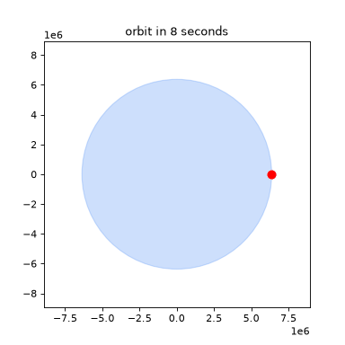

⚾ Steel-Ball Universe Rebuild physics from one rolling ball.
In 60 seconds: roll a steel ball down a ramp and you rediscover Galileo's 1·3·5·7 law. Keep following it — inertia, orbits at 7.9 km/s, energy, sound, light, relativity, quantum fringes, quarks, and the open edges of cosmology — and every step runs as code and passes. Live market feeds prove the verification pipeline works on the real, messy world too.
Tip: this page is preview.html (and docs/index.html). Enable GitHub Pages → Deploy from branch → main → /docs and it becomes your project website. See § Pages setup.
🌱 Beginner guide — read this and you are a professional
No physics degree needed. No finance background needed. If you can roll a ball, you can use this repo. Each step takes 2–5 minutes.
Step 0 · What am I looking at?
A polished steel ball on a table. Everything in this repo answers "what happens next if I … roll it, drop it, warm it, tap near it, charge it, or throw it really fast?" Twelve small programs check each answer with numbers.
Step 1 · See it move (2 min)
Scroll to Demo and press play. The red dot at 7.9 km/s never lands — that is an orbit. Slower dots fall back. You now understand satellites.
Step 2 · Hear Galileo (3 min)
Imagine bells on a ramp at 1, 3, 5, 7 meters apart ringing evenly. Odd gaps + even ticks = acceleration. Play with the bars below — totals make squares: 1, 4, 9, 16.
Step 3 · Feel energy (3 min)
Push the ball up a U-track in your mind: height becomes speed, speed becomes height. Friction steals a little as warmth. The books always balance — energy is never lost, only moved.
If you see PASS 12/12, you reproduced the whole story. You now know more than most interview candidates about verification, not just facts.
Step 5 · Impress someone
Open reports/benchmark.json. Every claim has a number, a tolerance, and a pass/fail. That is what "verified" means here — not "trust me".
Let's work this out in a step-by-step way to be sure we have the right answer: each program prints its own result, each test asserts it, and the Docker image reruns all of it from zero.
▶ Demo — the 8-second orbit
What you will see: a blue Earth, a red steel ball circling it. At ~7.9 km/s the surface curves away as fast as the ball falls — so it keeps falling and keeps missing. That is orbit. (GIF autoplays everywhere; MP4 plays on this page.)

Files: docs/media/demo.mp4 (8 s, H.264) · docs/media/demo.gif (autoplay) · docs/media/poster.png (thumbnail). In a GitHub README use the GIF (autoplays) + a link to the MP4; on this Pages site the <video> tag plays inline. Full guide in § FAQ.
Try it live (no install, in your browser)
Odd-number bars
Gaps 1·3·5·7 at equal ticks → totals 1·4·9·16. Drag the slider.
Newton cannon
Speed slider: below ~7.9 km/s the shot falls back; at 7.9 it circles.
Double-slit buildup
Each dot is one electron landing at random. Dots accumulate into fringes — odds follow a wave.
Each module returns {name, pass, numbers…}. The suite exits non-zero on any failure. A preregistered market null is expected to fail as physics — proving the harness can say no.
Live-data leg
Keyless feeds (Bitcoin, ECB forex, equities) with shipped snapshots for offline runs. Proves the same fetch→test pipeline works outside textbooks.
One-command reproduce
docker compose up --build lab → reports/benchmark.json + figures. docker compose run --rm test → pytest gate. No secrets, no GPU.
Website included
This page (preview.html / docs/index.html) + .nojekyll + Pages workflow. Push, flip two settings, share the link.
PhD-ready patterns
Three confirmed cross-cutting structures + one null, each with a concrete next experiment (classroom RCT, visibility matrix, dimensional classifier, null-result journal).
👥 User stories — who is this for?
Persona
Uses it to…
Starts with
Curious beginner
Understand motion → quanta in an afternoon without equations-first fear.
§ Beginner + Demo, then python -m src.galileo_ramp
Teacher / TA
Run bells-first lessons, muon/orbit homework, double-slit intuition with code students can rerun.
Demo canvases + reports/*.png slides
Interview candidate
Show verification discipline: tolerances, negative controls, live-data honesty, Docker reproduce.
reports/benchmark.json + § Benchmarks
Hiring reviewer
Decide in 60 s: hero summary → demo → 12/12 table → one Docker command.
Top of this page
Researcher (PhD track)
Extend one pattern into a paper: RCT, visibility matrix, classifier, or null journal (see README §7).
Hidden-patterns module + docs
Builder / hacker
Fork the harness: add a claim as src/<claim>.py::run_benchmark() + one test.
ECB forex via Frankfurt feed (2026-10-05). Check: all > 0, three currencies present.
🍎 332.89
Equity quote, live fetch, volume 34M. Check: close > 0. Offline? Ships with snapshots and marks source: cached.
We do not claim markets obey F=ma. We prove the harness survives contact with uncontrolled data — the discipline a public study needs.
🔍 Hidden patterns — what to put in a paper
P1 · Odds sum to squares (confirmed)
1, 1+3=4, 1+3+5=9, 1+3+5+7=16. Interval law and total law are one fact seen two ways. Next: bells-first classroom trial measuring unaided derivation of s∝t².
P2 · Inverse-square family (confirmed as geometry)
Gravity, Coulomb, sound intensity share 1/r² because flux spreads over 4πr² (fitted slope −2.000). Same exponent, different mechanisms. Next: dimensional classifier predicting which new phenomena must dilute geometrically.
V = 1 for sound and electrons alike; which-path info kills both. What waves differs: medium vs probability. Next: one visibility() API across acoustic, optical, and simulated-quantum rigs.
P4 · Market null (rejected — on purpose)
Live Bitcoin return ratios [1.0, 1.47, 0.10, 0.48] vs [1,3,5,7]: distance 3.24 → REJECTED. A suite that cannot fail proves nothing; this one can. Next: null-result journal for physics-inspired finance claims.
🐳 Run it yourself (tested paths)
git clone <your-fork-url> steel-ball-universe && cd steel-ball-universe
docker compose up --build lab # 12 benchmarks → reports/benchmark.json + figures
docker compose run --rm test # pytest gate (12 tests)
# no Docker?
pip install -r requirements.txt
python -m src.run_all_benchmarks --output reports/benchmark.json --figures reports/
pytest tests/ -v
Layout: src/ experiments · tests/ gates · data/ constants + live snapshots · reports/ JSON + PNG · docs/ this site + methods · tools/ demo generator.
🌐 Make this page your project website (GitHub Pages, 2026)
Option A · Deploy from a branch (simplest, no build)
1. Commit docs/index.html + docs/.nojekyll (already in this repo).
2. Push to GitHub: git push origin main
3. GitHub → your repo → Settings → Pages (sidebar: Code, planning, automation → Pages).
4. Build and deployment → Source: Deploy from a branch.
5. Branch: main Folder: /docs → Save.
6. Wait ~1 min → visit https://<you>.github.io/<repo>/
Entry file: docs/index.html. .nojekyll disables Jekyll so _-files and plain CSS/JS serve as-is.
Option B · GitHub Actions (custom build)
Use the included .github/workflows/pages.yml (upload-pages-artifact → deploy-pages). Then set Source: GitHub Actions. Same URL.
Project sites live at https://<you>.github.io/<repo>/ — use relative paths (media/demo.mp4, not /media/…) so CSS/JS/video load under the subpath. Custom domain + HTTPS: Settings → Pages → Custom domain (see Pages docs).
❓ FAQ
Do I need physics or finance to use this?
No. Follow the beginner guide top-down; every term is defined where it first appears, with a number attached.
How do I put a video in my README?
GitHub READMEs do not play arbitrary <video> tags. Best practice (2026): commit a short GIF (docs/media/demo.gif, autoplays, <8 MB) with , and link it to the MP4 or video page. On this Pages site the <video> tag plays inline with correct MIME. Keep GIFs to one action, 6–12 s, 12 fps, 480–720p.
How are screenshots handled (size, dark mode)?
Commit under docs/images/, reference relatively, set width so tall shots do not overflow, write alt text describing content (not "screenshot"). Use <picture> with light/dark sources for themed shots.
What if I am offline?
Benchmarks 1–10 and 12 run fully offline. Module 11 uses shipped snapshots and labels them cached. Docker needs no network after build.
Can I use this for teaching / interviews / a paper?
Yes — MIT. Cite via CITATION.cff. For a paper, start from § Hidden patterns: each has a falsifiable follow-up.
What is intentionally NOT claimed?
Simulations check textbook theory vs code, not new measurements; the orbit is Newtonian (GR upgrade proposed); markets are a pipeline check, not physics; the 2026 "quantum gravity" headlines refer to limited regimes, not a complete theory.